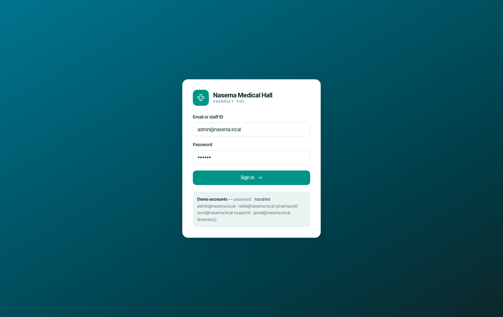
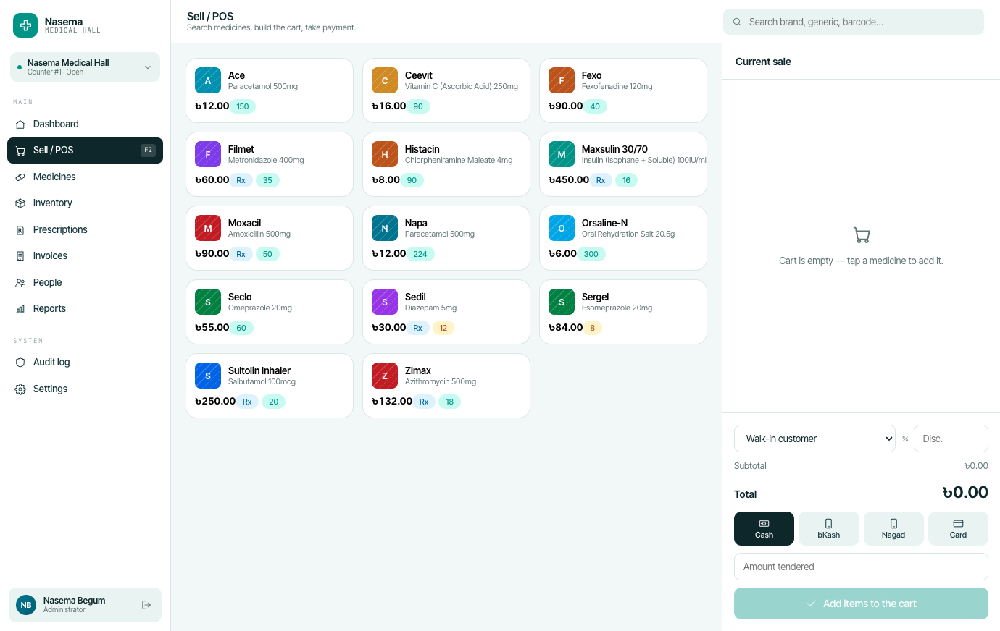
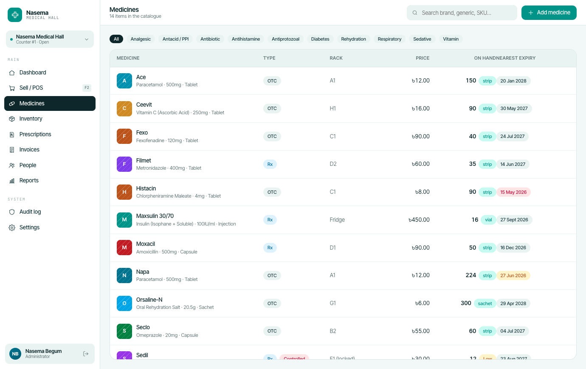
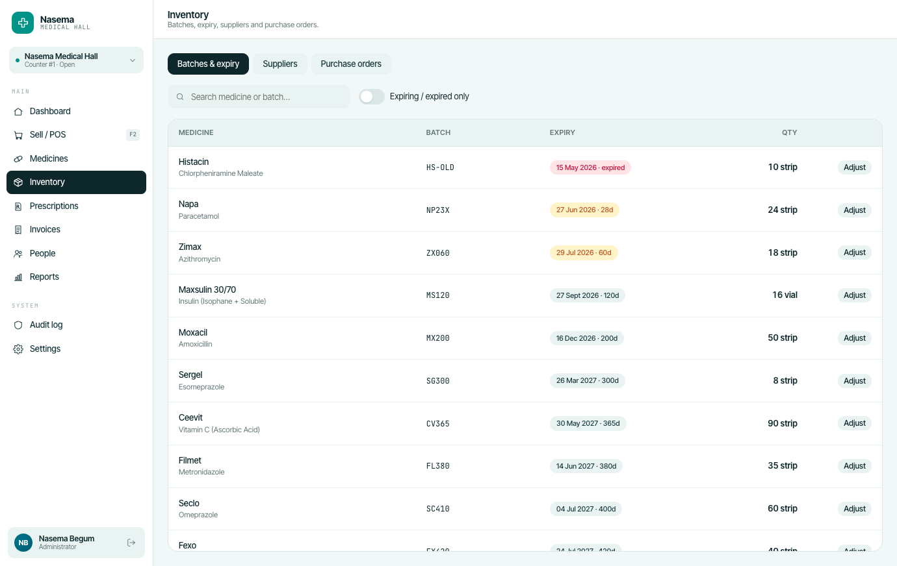
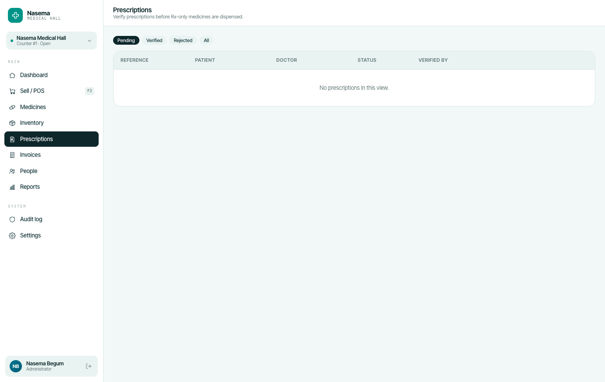
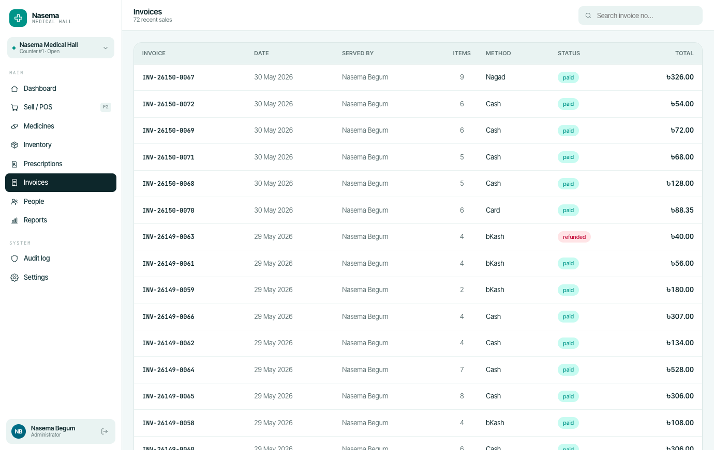
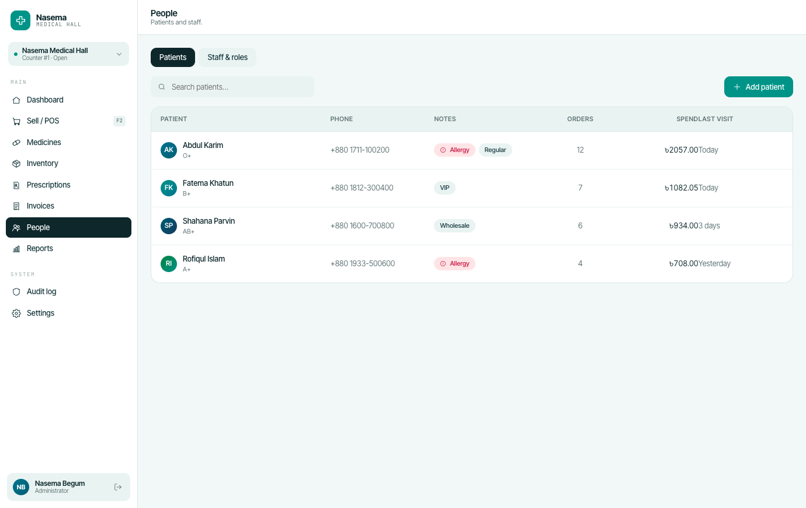

A complete point-of-sale for an independent pharmacy — cashier, prescriptions, supplier orders, role-based access. Designed during a 6-month AIUB placement; live today.
The pilot pharmacy ran a paper ledger and four daily spreadsheets. Stockouts, mis-prescriptions, and end-of-day reconciliation ate the owner's evening.
I designed the system to map onto the existing workflow rather than replace it: same role names, same receipts, same shift cadence.
02 · Screens
The cashier & back-office.
Cashier & pharmacist







1 / 8
03 · Manager view
Reports & stock.
Manager
1 / 3
04 · Outcome
What shifted.
End-of-day reconciliation from 45 min to under 5 min
Stock-out alerts replaced a weekly manual count
Owner now reviews one dashboard instead of four sheets